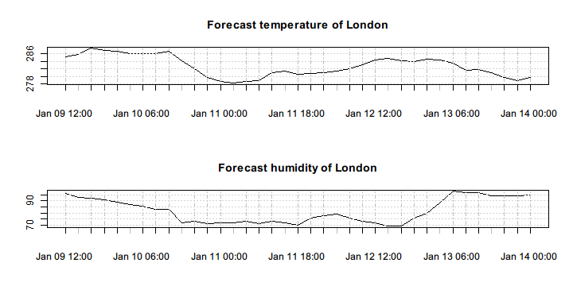

OpenWeatherMap provides a set of weather API that is simple, clear and free. Using the API, we get access to not only the current weather data, forecasts, historical data, and so on. The returned data is by default presented in JSON format, which can be easily loaded and processed by rlist functions.
The following code downloads the latest weather data of New York and London.
library(rlist)
library(pipeR)
weather <- "http://api.openweathermap.org/data/2.5/weather?q=%s" %>>%
sprintf(c("New York,us", "London,uk")) %>>%
list.load("json") %>>%
list.names(name)
list.load() in the latest development version of rlist supports loading multiple files given by a character vector. Here we use sprintf() to construct a character vector provided the URL template of a weather data query.
str(weather)
# List of 2
# $ New York:List of 11
# ..$ coord :List of 2
# .. ..$ lon: num -74
# .. ..$ lat: num 40.7
# ..$ sys :List of 4
# .. ..$ message: num 0.0179
# .. ..$ country: chr "US"
# .. ..$ sunrise: int 1420805973
# .. ..$ sunset : int 1420840025
# ..$ weather:List of 1
# .. ..$ :List of 4
# .. .. ..$ id : int 804
# .. .. ..$ main : chr "Clouds"
# .. .. ..$ description: chr "overcast clouds"
# .. .. ..$ icon : chr "04d"
# ..$ base : chr "cmc stations"
# ..$ main :List of 7
# .. ..$ temp : num 267
# .. ..$ temp_min : num 267
# .. ..$ temp_max : num 267
# .. ..$ pressure : num 1015
# .. ..$ sea_level : num 1030
# .. ..$ grnd_level: num 1015
# .. ..$ humidity : int 71
# ..$ wind :List of 2
# .. ..$ speed: num 3.62
# .. ..$ deg : num 227
# ..$ clouds :List of 1
# .. ..$ all: int 92
# ..$ dt : int 1420806501
# ..$ id : int 5128581
# ..$ name : chr "New York"
# ..$ cod : int 200
# $ London :List of 12
# ..$ coord :List of 2
# .. ..$ lon: num -0.13
# .. ..$ lat: num 51.5
# ..$ sys :List of 6
# .. ..$ type : int 3
# .. ..$ id : int 60992
# .. ..$ message: num 0.0324
# .. ..$ country: chr "GB"
# .. ..$ sunrise: int 1420790595
# .. ..$ sunset : int 1420819930
# ..$ weather:List of 1
# .. ..$ :List of 4
# .. .. ..$ id : int 801
# .. .. ..$ main : chr "Clouds"
# .. .. ..$ description: chr "few clouds"
# .. .. ..$ icon : chr "02d"
# ..$ base : chr "cmc stations"
# ..$ main :List of 5
# .. ..$ temp : num 285
# .. ..$ humidity: int 81
# .. ..$ pressure: num 1019
# .. ..$ temp_min: num 285
# .. ..$ temp_max: num 285
# ..$ wind :List of 3
# .. ..$ speed: int 1
# .. ..$ gust : num 8.8
# .. ..$ deg : int 270
# ..$ rain :List of 1
# .. ..$ 3h: int 0
# ..$ clouds :List of 1
# .. ..$ all: int 24
# ..$ dt : int 1420804144
# ..$ id : int 2643743
# ..$ name : chr "London"
# ..$ cod : int 200
We can see that weather includes the the information of the city as well as the weather.
The weather API also supports box searching, that is, search data from cities within the defined rectangle specified by the geographic coordinates. bbox indicates the bounding box of the following parameters: lat of the top left point, lon of the top left point, lat of the bottom right point, lon of the bottom right point, map zoom.
zone <- "http://api.openweathermap.org/data/2.5/box/city?bbox=%s&cluster=yes" %>>%
sprintf("12,32,15,37,10") %>>%
list.load("json")
Once we get the data, we can see the names of the cities in the zone.
zone$list %>>%
list.mapv(name)
# [1] "Gharyan" "Ragusa" "Rosolini" "Modica" "Pozzallo"
# [6] "Birkirkara" "Zlitan" "Al Khums" "Yafran" "Sabratah"
# [11] "Zuwarah" "Masallatah" "Tarhuna" "Tripoli" "Zawiya"
We can also build a table that shows the weather condition of these cities.
zone$list %>>%
list.table(weather[[1L]]$main)
#
# Clear Clouds
# 5 10
For more details, we can group the data by weather condition and see the name list for each type of weather.
zone$list %>>%
list.group(weather[[1L]]$main) %>>%
list.map(. %>>% list.mapv(name))
# $Clear
# [1] "Ragusa" "Rosolini" "Modica" "Pozzallo" "Tripoli"
#
# $Clouds
# [1] "Gharyan" "Birkirkara" "Zlitan" "Al Khums" "Yafran"
# [6] "Sabratah" "Zuwarah" "Masallatah" "Tarhuna" "Zawiya"
Sometimes it is easier to work with data frame for vectorization and model research. For example, we can build a data frame from the non-tabular data by stacking the list elements with selected fields.
zonedf <- zone$list %>>%
list.select(id, name,
coord_lon = coord$lon, coord_lat = coord$lat,
temp = main$temp, weather = weather[[1L]]$main) %>>%
list.stack %>>%
print
# id name coord_lon coord_lat temp weather
# 1 2217362 Gharyan 13.02028 32.17222 13.51 Clouds
# 2 2523650 Ragusa 14.71719 36.92824 32.97 Clear
# 3 2523581 Rosolini 14.94779 36.82424 14.76 Clear
# 4 2524119 Modica 14.77399 36.84594 14.76 Clear
# 5 2523693 Pozzallo 14.84989 36.73054 24.37 Clear
# 6 2563191 Birkirkara 14.46111 35.89722 14.90 Clouds
# 7 2208485 Zlitan 14.56874 32.46738 16.74 Clouds
# 8 2219905 Al Khums 14.26191 32.64861 16.74 Clouds
# 9 2208791 Yafran 12.52859 32.06329 14.14 Clouds
# 10 2212771 Sabratah 12.48845 32.79335 14.14 Clouds
# 11 2208425 Zuwarah 12.08199 32.93120 15.29 Clouds
# 12 2215163 Masallatah 14.00000 32.61667 16.74 Clouds
# 13 2210221 Tarhuna 13.63320 32.43502 14.84 Clouds
# 14 2210247 Tripoli 13.18746 32.87519 35.00 Clear
# 15 2216885 Zawiya 12.72778 32.75222 14.14 Clouds
The data frame well fits the input of most models.
zonedf %>>%
lm(formula = temp ~ coord_lon + coord_lat) %>>%
summary
#
# Call:
# lm(formula = temp ~ coord_lon + coord_lat, data = .)
#
# Residuals:
# Min 1Q Median 3Q Max
# -6.3718 -2.8074 -2.0001 -0.3938 17.9058
#
# Coefficients:
# Estimate Std. Error t value Pr(>|t|)
# (Intercept) -16.0706 32.5924 -0.493 0.631
# coord_lon 0.3053 2.7747 0.110 0.914
# coord_lat 0.8863 1.3741 0.645 0.531
#
# Residual standard error: 7.152 on 12 degrees of freedom
# Multiple R-squared: 0.08471, Adjusted R-squared: -0.06784
# F-statistic: 0.5553 on 2 and 12 DF, p-value: 0.588
The weather API provides give access to the forecast data. Here we get the forecast data of the London city.
forecast <- "http://api.openweathermap.org/data/2.5/forecast?q=London,uk" %>>%
list.load("json")
The forecast incorporates some meta-information such as the city data and message retrieval data. We can easily transform the forecast points to an xts object as a time series.
fxts <- forecast$list %>>%
list.select(dt = as.POSIXct(dt_txt),
temp = main$temp, humidity = main$humidity) %>>%
list.stack %>>%
(xts::xts(x = .[-1L], order.by = .$dt))
head(fxts)
# temp humidity
# 2015-01-09 12:00:00 285.25 96
# 2015-01-09 15:00:00 285.85 93
# 2015-01-09 18:00:00 287.46 92
# 2015-01-09 21:00:00 286.94 91
# 2015-01-10 00:00:00 286.58 89
# 2015-01-10 03:00:00 286.12 87
As long as the data we are interested in is converted to a time series, we can easily create graphics from it.
par(mfrow=c(2,1))
plot(fxts$temp, main = "Forecast temperature of London")
plot(fxts$humidity, main = "Forecast humidity of London")

The weather API allows us to access the historical weather database. The database adopts UNIX Date/Time standard for which we define unixdt() to better transform human-readable date/time to numbers included in the data query.
unixdt <- function(date) {
as.integer(as.POSIXct(date, tz = "UTC"))
}
The following code queries the hourly historical data of New York from 2014-10-01 00:00:00 and get the maximal number of records a free account is allowed.
history <- "http://api.openweathermap.org/data/2.5/history/city?&q=%s&start=%d&cnt=200" %>>%
sprintf("New York,us", unixdt("2014-10-01 00:00:00")) %>>%
list.load("json")
Once the historical data is ready, we can get some simple impression on it. For example, we can see the weather distribution.
history$list %>>%
list.table(weather = weather[[1L]]$main) %>>%
list.sort(-.)
# weather
# Clouds Rain Mist Drizzle Haze
# 80 58 10 3 2
We can also inspect the location statistics of humidity data for each weather condition.
history$list %>>%
list.group(weather[[1L]]$main) %>>%
list.map(. %>>%
list.mapv(main$humidity) %>>%
summary)
# $Clouds
# Min. 1st Qu. Median Mean 3rd Qu. Max.
# 42.0 59.0 70.0 67.6 77.0 88.0
#
# $Drizzle
# Min. 1st Qu. Median Mean 3rd Qu. Max.
# 82.00 82.00 82.00 83.67 84.50 87.00
#
# $Haze
# Min. 1st Qu. Median Mean 3rd Qu. Max.
# 77 77 77 77 77 77
#
# $Mist
# Min. 1st Qu. Median Mean 3rd Qu. Max.
# 72.00 82.00 84.50 83.30 87.75 88.00
#
# $Rain
# Min. 1st Qu. Median Mean 3rd Qu. Max.
# 68.00 77.00 82.00 82.31 88.00 94.00
Or we can create an xts object from it.
nyxts <- history$list %>>%
list.select(dt = as.POSIXct(dt, origin = "1970-01-01"),
temp = main$temp, humidity = main$humidity) %>>%
list.stack %>>%
(xts::xts(x = .[-1L], order.by = .$dt))
head(nyxts)
# temp humidity
# 2014-10-01 08:23:50 291.47 82
# 2014-10-01 09:22:49 290.90 72
# 2014-10-01 09:41:57 290.34 72
# 2014-10-01 10:22:23 290.35 77
# 2014-10-01 11:23:14 290.10 72
# 2014-10-01 11:35:04 290.10 72
The object facilitates time series operations but also can be used in time series model fitting.
forecast::auto.arima(nyxts$temp)
# Error in loadNamespace(name): there is no package called 'forecast'